🖼️ Crédits des tableaux
Les portraits des souverains d'Imperium of Wars sont de vraies œuvres anciennes (peintures, enluminures, fresques, gravures) dans le domaine public, trouvées sur Wikimedia Commons. Elles ont seulement été recadrées sur le visage. Merci aux musées, bibliothèques et bénévoles qui les partagent !
147 tableaux. Les personnages sans tableau connu gardent un portrait dessiné par le jeu.
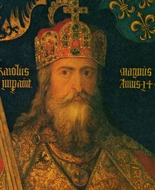 | Charlemagne né(e) en 742 | Albrecht Dürer · 1511–1513 Domaine public | Voir sur Commons |
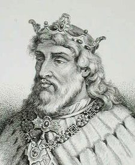 | Didier né(e) en 720 | Scotto G. dis. Ed. inc (G. Scotto, drawing and engraving) · 1840 Domaine public | Voir sur Commons |
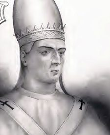 | Étienne III né(e) en 720 | Artaud de Montor Domaine public | Voir sur Commons |
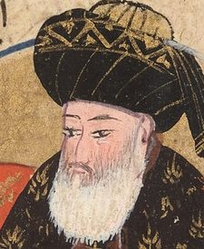 | al-Mansur né(e) en 714 | 1598 author · 1598 Domaine public | Voir sur Commons |
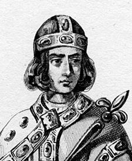 | Widukind né(e) en 730 | «Mme Lesueur» Domaine public | Voir sur Commons |
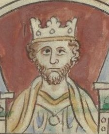 | Offa de Mercie né(e) en 730 | Matthew Paris · 1000–1255 Domaine public | Voir sur Commons |
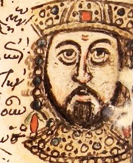 | Léon IV né(e) en 750 | Artiste inconnu Byzantine scribes · 15th century Domaine public | Voir sur Commons |
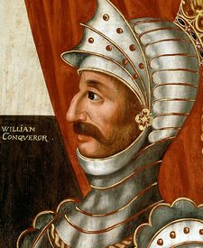 | Guillaume le Conquérant né(e) en 1028 | British – School Details on Google Art Project · 1618–1620 Domaine public | Voir sur Commons |
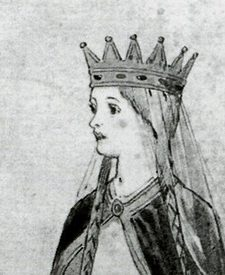 | Mathilde de Flandre né(e) en 1031 | Matilda of Flanders · See description Domaine public | Voir sur Commons |
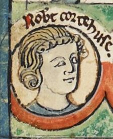 | Robert Courteheuse né(e) en 1051 | Artiste inconnu Domaine public | Voir sur Commons |
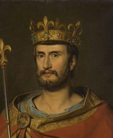 | Philippe Ier né(e) en 1052 | Gillot Saint-Evre · 1837 Domaine public | Voir sur Commons |
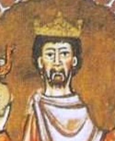 | Henri IV né(e) en 1050 | Artiste inconnu · 1105/1106 Domaine public | Voir sur Commons |
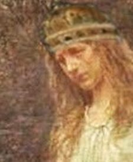 | Berthe de Savoie né(e) en 1051 | Artiste inconnu · around 19C CC0 | Voir sur Commons |
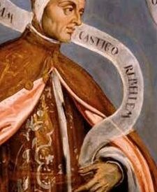 | Domenico Contarini né(e) en 1000 | Domenico Tintoretto · 1570s Domaine public | Voir sur Commons |
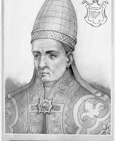 | Alexandre II né(e) en 1010 | Artaud de Montor Domaine public | Voir sur Commons |
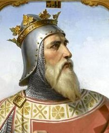 | Robert Guiscard né(e) en 1015 | Merry-Joseph Blondel · 1843 Domaine public | Voir sur Commons |
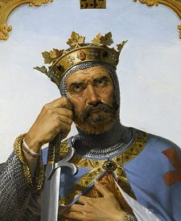 | Bohémond né(e) en 1054 | Merry-Joseph Blondel · 1843 Domaine public | Voir sur Commons |
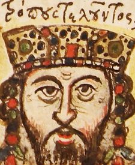 | Constantin X Doukas né(e) en 1006 | Artiste inconnu Byzantine scribes · 15th century Domaine public | Voir sur Commons |
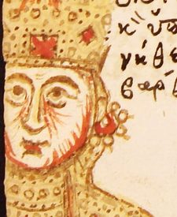 | Eudocie Makrembolitissa né(e) en 1030 | Artiste inconnu Byzantine scribes · 15th century Domaine public | Voir sur Commons |
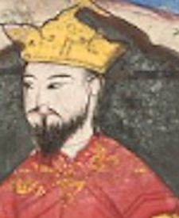 | Alp Arslan né(e) en 1029 | Hafiz-i Abru · 1425 Domaine public | Voir sur Commons |
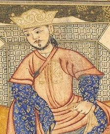 | Malik Shah né(e) en 1055 | 1315 artist Domaine public | Voir sur Commons |
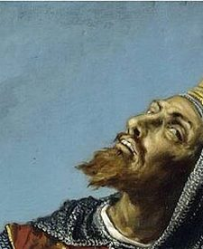 | Sanche II né(e) en 1038 | José María Rodríguez de Losada · 1892–1894 Domaine public | Voir sur Commons |
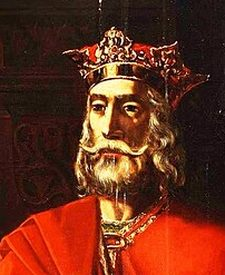 | Alphonse VI né(e) en 1040 | Ramón Cortés · 1851 Domaine public | Voir sur Commons |
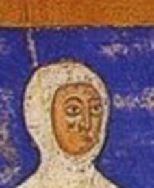 | Urraca né(e) en 1033 | Artiste inconnu · 1129–1134 Domaine public | Voir sur Commons |
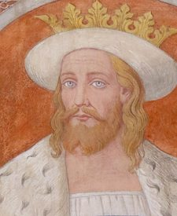 | Sven II Estridsen né(e) en 1019 | Orf3us · 2014-08 Domaine public | Voir sur Commons |
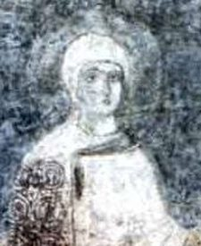 | Élisabeth de Kiev né(e) en 1025 | Artiste inconnu · 11th century Domaine public | Voir sur Commons |
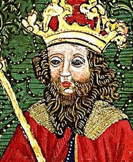 | Salomon né(e) en 1053 | Johannes de Thurocz · 1488 Domaine public | Voir sur Commons |
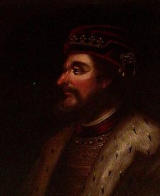 | Malcolm III né(e) en 1031 | Jacob Jacobsz de Wet II (Haarlem 1641/2 - Amsterdam 1697) Domaine public | Voir sur Commons |
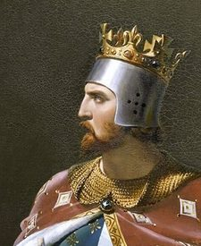 | Richard Cœur de Lion né(e) en 1157 | Merry-Joseph Blondel · 1841 Domaine public | Voir sur Commons |
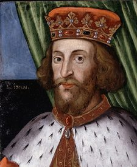 | Jean sans Terre né(e) en 1166 | British – School Details on Google Art Project · Before 1626 Domaine public | Voir sur Commons |
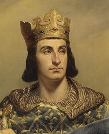 | Philippe Auguste né(e) en 1165 | Louis-Félix Amiel · 1837 Domaine public | Voir sur Commons |
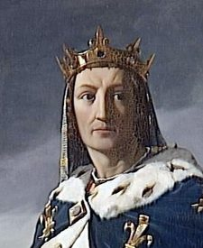 | Louis (VIII) né(e) en 1187 | Henri Lehmann · 1837 Domaine public | Voir sur Commons |
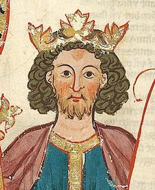 | Henri VI né(e) en 1165 | Meister des Codex Manesse · 1305–1315 Domaine public | Voir sur Commons |
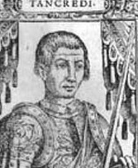 | Tancrède de Lecce né(e) en 1138 | Artiste inconnu · middle ages Domaine public | Voir sur Commons |
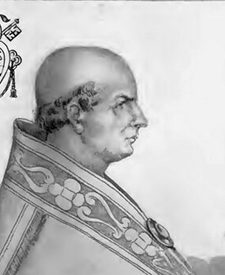 | Clément III né(e) en 1130 | Artaud de Montor Domaine public | Voir sur Commons |
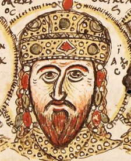 | Isaac II Ange né(e) en 1156 | Artiste inconnu Byzantine scribes · 15th century Domaine public | Voir sur Commons |
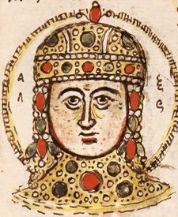 | Alexis Ange né(e) en 1182 | Artiste inconnu Byzantine scribes · 15th century Domaine public | Voir sur Commons |
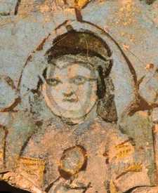 | Kılıç Arslan II né(e) en 1113 | 1156-92 artist · 1156 Domaine public | Voir sur Commons |
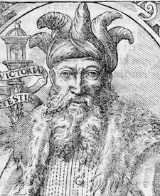 | Saladin né(e) en 1137 | Giovio, Paolo, 1483-1552 · 1575 Domaine public | Voir sur Commons |
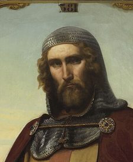 | Guy de Lusignan né(e) en 1150 | François-Édouard Picot · 1845 Domaine public | Voir sur Commons |
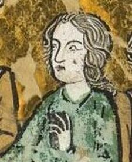 | Sibylle de Jérusalem né(e) en 1160 | Artiste inconnu · 13th century Domaine public | Voir sur Commons |
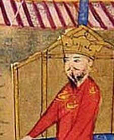 | Tekish né(e) en 1149 | Early 14th century artist Domaine public | Voir sur Commons |
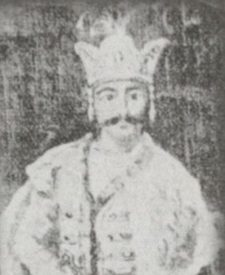 | David Soslan né(e) en 1165 | Artiste inconnu CC0 | Voir sur Commons |
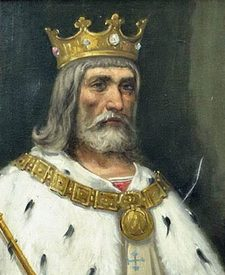 | Alphonse VIII né(e) en 1155 | José María Rodríguez de Losada · 1892–1894 Domaine public | Voir sur Commons |
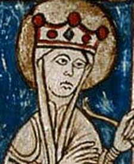 | Aliénor d'Angleterre né(e) en 1162 | Artiste inconnu · 1274–1300 Domaine public | Voir sur Commons |
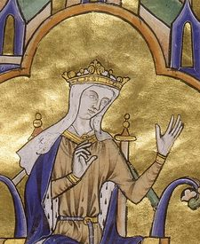 | Blanche de Castille né(e) en 1188 | Artiste inconnu · 13th century Domaine public | Voir sur Commons |
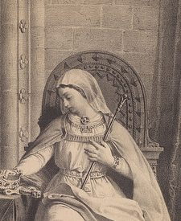 | Bérengère né(e) en 1180 | Fondo Antiguo de la Biblioteca de la Universidad de Sevilla Domaine public | Voir sur Commons |
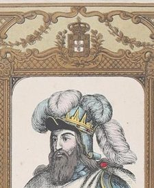 | Sanche Ier né(e) en 1154 | Artiste inconnu · 19th century Domaine public | Voir sur Commons |
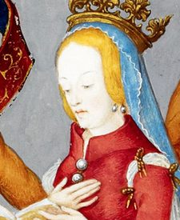 | Douce d'Aragon né(e) en 1160 | António de Holanda · 1530–1534 Domaine public | Voir sur Commons |
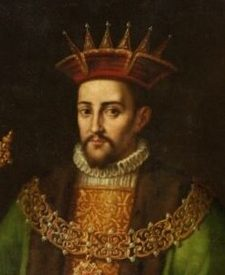 | Alphonse II né(e) en 1157 | Rafael Pertús · Primera mitad del siglo XVII Domaine public | Voir sur Commons |
| Marguerite de France né(e) en 1158 | Artiste inconnu · 14th century Domaine public | Voir sur Commons | |
| Ivan Asen Ier né(e) en 1150 | Nikolai Pavlovich · 1860 Domaine public | Voir sur Commons | |
| Casimir II le Juste né(e) en 1138 | Walery Eljasz Radzikowski · 1893 Domaine public | Voir sur Commons | |
| Lech le Blanc né(e) en 1186 | Jan Matejko · 1913 Domaine public | Voir sur Commons | |
| Knut Eriksson né(e) en 1150 | Artiste inconnu painter (at Old Dädesjö Church) · 1290 Domaine public | Voir sur Commons | |
| Sverre né(e) en 1151 | Alexander Bugge Domaine public | Voir sur Commons | |
| Guillaume le Lion né(e) en 1143 | Jacob Jacobsz de Wet II (Haarlem 1641/2 - Amsterdam 1697) Domaine public | Voir sur Commons | |
| Sviatoslav III né(e) en 1123 | Artiste inconnu · 19th century Domaine public | Voir sur Commons | |
| Vsevolod Grand-Nid né(e) en 1154 | Artiste inconnu · 1673 Domaine public | Voir sur Commons | |
| Iouri né(e) en 1188 | Artiste inconnu Russian painter · 1652-1666 гг. Domaine public | Voir sur Commons | |
| Mehmed II le Conquérant né(e) en 1432 | Gentile Bellini · 1480 Domaine public | Voir sur Commons | |
| Bayezid né(e) en 1447 | 16th century artist · 16th century Domaine public | Voir sur Commons | |
| Charles VII né(e) en 1403 | Artiste inconnu Domaine public | Voir sur Commons | |
| Marie d'Anjou né(e) en 1404 | Artiste inconnu · 1430 Domaine public | Voir sur Commons | |
| Louis (XI) né(e) en 1423 | Jacob de Litemont · 1469 Domaine public | Voir sur Commons | |
| Philippe le Bon né(e) en 1396 | Rogier van der Weyden · before 1464 or 1520 Domaine public | Voir sur Commons | |
| Isabelle de Portugal né(e) en 1397 | R. Mathis Domaine public | Voir sur Commons | |
| Charles le Téméraire né(e) en 1433 | Rogier van der Weyden · 1460 Domaine public | Voir sur Commons | |
| Henri VI né(e) en 1421 | Artiste inconnu · 1540 Domaine public | Voir sur Commons | |
| Marguerite d'Anjou né(e) en 1430 | Talbot Master (fl. in Rouen, c. 1430–60) · 1445 Domaine public | Voir sur Commons | |
| Édouard de Westminster né(e) en 1453 | Silvester Harding Domaine public | Voir sur Commons | |
| Jacques II né(e) en 1430 | Artiste inconnu · 17th century Domaine public | Voir sur Commons | |
| Marie de Gueldre né(e) en 1434 | Artiste inconnu Domaine public | Voir sur Commons | |
| Jacques (III) né(e) en 1451 | Artiste inconnu · 17th century Domaine public | Voir sur Commons | |
| Jean II né(e) en 1405 | After Alfonso de Cartagena · 16th century Domaine public | Voir sur Commons | |
| Isabelle de Portugal né(e) en 1428 | Artiste inconnu Domaine public | Voir sur Commons | |
| Henri (IV) né(e) en 1425 | René Gaillard Domaine public | Voir sur Commons | |
| Isabelle la Catholique né(e) en 1451 | Artiste inconnu · 1470–1520 Domaine public | Voir sur Commons | |
| Alphonse V le Magnanime né(e) en 1396 | Juan de Juanes · 1557 Domaine public | Voir sur Commons | |
| Ferdinand le Catholique né(e) en 1452 | Artiste inconnu · 1470–1520 Domaine public | Voir sur Commons | |
| Alphonse V l'Africain né(e) en 1432 | Pedro Perret · 1603 Domaine public | Voir sur Commons | |
| Isabelle de Coimbra né(e) en 1432 | Nuno Goncalves Domaine public | Voir sur Commons | |
| Jeanne né(e) en 1452 | Nuno Gonçalves · 1475 Domaine public | Voir sur Commons | |
| Frédéric III né(e) en 1415 | Attributed to Hans Burgkmair the Elder · late 15th century - early 16th century Domaine public | Voir sur Commons | |
| Éléonore de Portugal né(e) en 1434 | Master of the Legend of the Magdalene · 1500–1525 Domaine public | Voir sur Commons | |
| Francesco Sforza né(e) en 1401 | School of Lombardy · 1460 Domaine public | Voir sur Commons | |
| Bianca Maria Visconti né(e) en 1425 | Bonifacio Bembo · 1460 Domaine public | Voir sur Commons | |
| Galeazzo Maria né(e) en 1444 | Piero del Pollaiuolo · 1471 Domaine public | Voir sur Commons | |
| Ludovic le More né(e) en 1452 | Giovanni Ambrogio de Predis Domaine public | Voir sur Commons | |
| Francesco Foscari né(e) en 1373 | Lazzaro Bastiani · 1457–1460 or mid to late 1470s Domaine public | Voir sur Commons | |
| Cosme de Médicis né(e) en 1389 | WGA Domaine public | Voir sur Commons | |
| Contessina de' Bardi né(e) en 1390 | Attributed to Cristofano dell'Altissimo · 1570–1580 or 1555–1565 Domaine public | Voir sur Commons | |
| Pierre le Goutteux né(e) en 1416 | Workshop of Bronzino · 1550–1560 Domaine public | Voir sur Commons | |
| Nicolas V né(e) en 1397 | Collected by Giovio, Paolo, 1483-1552 · Early 16th century Domaine public | Voir sur Commons | |
| Ladislas le Posthume né(e) en 1440 | Artiste inconnu , Austria 15th century · 1457 Domaine public | Voir sur Commons | |
| Vladislav II né(e) en 1410 | Artiste inconnu Domaine public | Voir sur Commons | |
| Casimir IV Jagellon né(e) en 1427 | Artiste inconnu · 1645 Domaine public | Voir sur Commons | |
| Ludwig von Erlichshausen né(e) en 1410 | Artiste inconnu · After 1684 Domaine public | Voir sur Commons | |
| Vassili II l'Aveugle né(e) en 1415 | collective · 1672 Domaine public | Voir sur Commons | |
| Ivan (III) le Grand né(e) en 1440 | H.F. Helmolt · 1575 Domaine public | Voir sur Commons | |
| Uzun Hasan né(e) en 1423 | 1467-1473 artist · 1467–1473 Domaine public | Voir sur Commons | |
| Georges VIII né(e) en 1417 | Artiste inconnu · 17th century Domaine public | Voir sur Commons | |
| Christian Ier né(e) en 1426 | Artiste inconnu Domaine public | Voir sur Commons | |
| Dorothée de Brandebourg né(e) en 1430 | Artiste inconnu · 1400s Domaine public | Voir sur Commons | |
| Louis XIV né(e) en 1638 | Hyacinthe Rigaud · 1701 Domaine public | Voir sur Commons | |
| Louis, le Grand Dauphin né(e) en 1661 | After Joseph Parrocel / Workshop of Hyacinthe Rigaud · 18th century, after a work of 1697 Domaine public | Voir sur Commons | |
| Louis de Bourgogne né(e) en 1682 | Studio of Hyacinthe Rigaud · 18th century Domaine public | Voir sur Commons | |
| Charles II l'Ensorcelé né(e) en 1661 | Juan Carreño de Miranda · 1680 Domaine public | Voir sur Commons | |
| Marie-Anne de Neubourg né(e) en 1667 | Pieter van Gunst · 1690 Domaine public | Voir sur Commons | |
| Philippe d'Anjou né(e) en 1683 | Jean Ranc · 1723 Domaine public | Voir sur Commons | |
| Pierre II né(e) en 1648 | Autor desconhecido · 17th century Domaine public | Voir sur Commons | |
| Marie-Sophie de Neubourg né(e) en 1666 | Attributed to Caspar Netscher · 17th century Domaine public | Voir sur Commons | |
| Jean (V) né(e) en 1689 | Jean Ranc · 1729 Domaine public | Voir sur Commons | |
| Guillaume III d'Orange né(e) en 1650 | Godfrey Kneller · 1690 Domaine public | Voir sur Commons | |
| Anne Stuart né(e) en 1665 | Godfrey Kneller · 1690 Domaine public | Voir sur Commons | |
| Grand-pensionnaire Heinsius né(e) en 1641 | van den Eeckhout, Gerbrandt (Dutch painter and engraver, 1621-1674) (artist) (de · UnknownUnknown Domaine public | Voir sur Commons | |
| Léopold Ier né(e) en 1640 | Benjamin Block · 1672 Domaine public | Voir sur Commons | |
| Éléonore de Neubourg né(e) en 1655 | Unidentified painter · 1680s Domaine public | Voir sur Commons | |
| Joseph (Ier) né(e) en 1678 | Unidentified painter · 1700 Domaine public | Voir sur Commons | |
| Charles (VI) né(e) en 1685 | Artiste inconnu · 1720–1730 / 1720–1730 Domaine public | Voir sur Commons | |
| Frédéric Ier né(e) en 1657 | Artiste inconnu Domaine public | Voir sur Commons | |
| Sophie-Charlotte de Hanovre né(e) en 1668 | Friedrich Wilhelm Weidemann Domaine public | Voir sur Commons | |
| Frédéric-Guillaume né(e) en 1688 | Antoine Pesne · 1733 Domaine public | Voir sur Commons | |
| Maximilien II Emmanuel né(e) en 1662 | Joseph Vivien · 18th century Domaine public | Voir sur Commons | |
| Thérèse-Cunégonde Sobieska né(e) en 1676 | Unidentified painter · 1660–1700 Domaine public | Voir sur Commons | |
| Charles-Albert né(e) en 1697 | Joseph Vivien · 1717–1719 Domaine public | Voir sur Commons | |
| Auguste le Fort né(e) en 1670 | Workshop of Louis de Silvestre · after 1718 Domaine public | Voir sur Commons | |
| Auguste II (roi élu) né(e) en 1670 | Louis de Silvestre · 1736 Domaine public | Voir sur Commons | |
| Christiane-Eberhardine né(e) en 1671 | Louis de Silvestre · Probably first half of 18th century Domaine public | Voir sur Commons | |
| Frédéric-Auguste né(e) en 1696 | Workshop of Pietro Rotari · 1755–1756 Domaine public | Voir sur Commons | |
| Alvise II Mocenigo né(e) en 1628 | Artiste inconnu Domaine public | Voir sur Commons | |
| Innocent XII né(e) en 1615 | Antonio Zanchi · late 16th century(presumably 1691–1699) Domaine public | Voir sur Commons | |
| Charles XII né(e) en 1682 | David von Krafft Domaine public | Voir sur Commons | |
| Ulrique-Éléonore né(e) en 1688 | Attributed to Georg Desmarées · 18th century Domaine public | Voir sur Commons | |
| Frédéric IV né(e) en 1671 | Benoît Le Coffre · 18th century Domaine public | Voir sur Commons | |
| Louise de Mecklembourg né(e) en 1667 | Unidentified painter · turn of the 17/18th century Domaine public | Voir sur Commons | |
| Christian (VI) né(e) en 1699 | Johann Salomon Wahl Domaine public | Voir sur Commons | |
| Pierre le Grand né(e) en 1672 | Artiste inconnu · 17th century Domaine public | Voir sur Commons | |
| Eudoxie Lopoukhina né(e) en 1669 | Artiste inconnu · before 1727 Domaine public | Voir sur Commons | |
| Alexis Petrovitch né(e) en 1690 | Johann Gottfried Tannauer · 1710–1715 Domaine public | Voir sur Commons | |
| Natalia né(e) en 1673 | Artiste inconnu Russian painter · Конец 1700-х (?) Domaine public | Voir sur Commons | |
| Mustafa II né(e) en 1664 | Artiste inconnu (Ottoman Court Painter, circa 1700) · turn of the 17/18th century Domaine public | Voir sur Commons | |
| Ahmed (III) né(e) en 1673 | Jean Baptiste Vanmour · 1703-1737 Domaine public | Voir sur Commons | |
| Mahmud né(e) en 1696 | Jean Baptiste Vanmour · 1730–1737 Domaine public | Voir sur Commons | |
| Osman né(e) en 1699 | Konstantin Kapıdağlı · 1804–1806 Domaine public | Voir sur Commons | |
| Shah Sultan Husayn né(e) en 1668 | Cornelis de Bruijn · 1705 Domaine public | Voir sur Commons | |
| Moulay Ismaïl né(e) en 1645 | Artiste inconnu · 1726 Domaine public | Voir sur Commons |